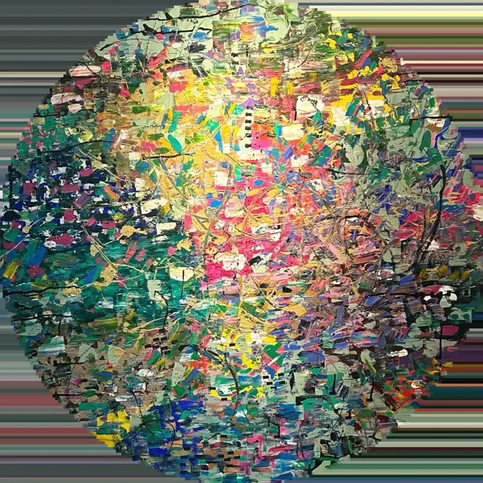

Independencia total
Actualiza el sitio 24/7 cuando surge una curaduría, una galería o una feria, sin depender de soporte técnico.
Sitio web + panel de autogestión
Un estudio privado detrás de aidavasquezyarull.com para actualizar cada texto, cada imagen y cada obra del sitio, en español e inglés, sin tocar una línea de código.

El punto de partida
Hoy el sitio está construido como una pieza fija: cada nueva obra, exposición o cambio de texto pasa por un desarrollador. El panel cambia eso, sin rediseñar lo que ya funciona.
Escribir al equipo técnico, esperar, revisar, publicar.
Subes la obra desde tu estudio y aparece en minutos.
Alcance total
Pantalla 01 · Acceso
Credenciales cifradas para Aida y su equipo, con roles: la artista edita todo, una asistente puede cargar obras sin tocar la portada.
Bienvenida a tu estudio digital.
Pantalla 02 · Inicio
Cada sección del sitio tiene su lugar en el menú. El inicio muestra qué está publicado, qué quedó en borrador y los últimos cambios.
Buenos días, Aida
Últimos cambios
La artista
Retrato principal
Pantalla 03 · Editor de secciones
Cada campo corresponde a un texto o imagen real del sitio. La vista previa usa el mismo diseño, así que nada se publica sin verlo antes.
Secciones / Portada
Artista contemporánea dominicana
Y el mundo se transforma cuando se cruzan.
Pantalla 04 · Obras
Arrastra una fotografía y el panel la comprime para web. Título, año, serie y técnica en un solo formulario; un interruptor la muestra u oculta, y el orden se cambia arrastrando.
Colección / Obras
Pantalla 05 · Trayectoria
Nuevas exposiciones, ferias y colecciones en segundos. La sección "La artista" se edita igual: retrato, biografía y cita, en ambos idiomas.
Perfil / Trayectoria
Institución · Ciudad
BorradorMuseo de Arte Moderno de la República Dominicana
VisibleConsulado General de la República Dominicana · Miami
VisiblePrimera exposición individual · Galería de Arte San Ramón
VisibleGalería de Arte San Ramón · Santo Domingo
VisibleMiami Art Week · Mana Wynwood Convention Center
VisibleLo que cambia
Actualiza el sitio 24/7 cuando surge una curaduría, una galería o una feria, sin depender de soporte técnico.
El panel solo llena los espacios del diseño. Tipografía, cuadrícula y transiciones del sitio quedan intactas.
Cada fotografía se comprime y redimensiona al subirla. El sitio sigue rápido aunque la colección crezca.
Cómo funciona
Aida edita textos, imágenes y obras con acceso seguro.
Valida cada cambio y guarda el historial de versiones.
Contenido bilingüe y fotografías optimizadas en un solo lugar.
aidavasquezyarull.com muestra la información en el mismo diseño.
El panel se integra al proyecto actual del sitio (Next.js). Al aprobarse la propuesta, el contenido existente se migra completo al panel: Aida empieza con su sitio tal como está hoy, ya editable.
Inversión 01 · Sitio web
aidavasquezyarull.com se diseñó y programó desde cero a partir de la narrativa de la artista: cada sección, transición y trazo responde a su obra. Por eso no usa temas prefabricados ni constructores visuales, y por eso carga rápido, se ve igual en cualquier pantalla y está lista para crecer con el panel.
| 01 | Estrategia y narrativaDocumento maestro de marca, arquitectura de secciones y textos curatoriales. | $200.00 |
| 02 | Diseño UI/UX editorialDiseño a medida de cada sección y su versión para móvil y tablet. | $300.00 |
| 03 | Desarrollo e interaccionesProgramación en Next.js: portal guiado por scroll, transiciones radiales, trazos con paralaje y apariciones. | $350.00 |
| 04 | Sitio bilingüeContenido completo en español e inglés con cambio de idioma. | $120.00 |
| 05 | Curación de imágenes y videoOptimización de obras, retratos y video de fondo para web sin perder calidad. | $130.00 |
| 06 | SEO y lanzamientoDominio oficial, https, sitemap, Google Search Console, vista previa para redes y publicación en Hostinger. | $200.00 |
Inversión 02 · Panel de autogestión
| 01 | Diseño UI del panelInterfaz administrativa exclusiva con la identidad visual del sitio. | $300.00 |
| 02 | Desarrollo backendBase de datos segura, acceso con roles, historial de versiones y biblioteca de imágenes. | $450.00 |
| 03 | Integración frontendConexión de las 12 secciones bilingües con el panel, con vista previa antes de publicar. | $400.00 |
| 04 | Migración y capacitaciónTraslado del contenido actual al panel, sesión de entrega, guía de uso y credenciales. | $150.00 |
Resumen de inversión
Siguiente paso
Con tu aprobación iniciamos el diseño del panel sobre el proyecto actual del sitio.